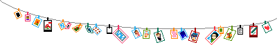
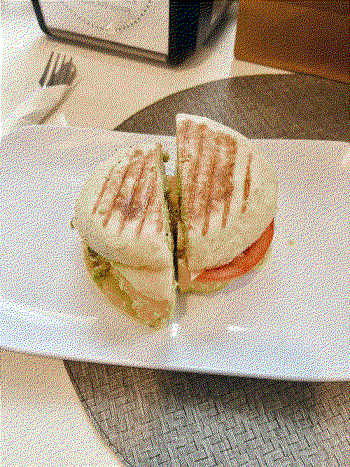

jennette mccurdy?! at MY school?! it's more likely than you'd think. last Friday the one and only jennette mcCurdy came to my campus to talk about her book and i had no idea this event was happening until literally 2 hours before. i battled  many demons and the will of gods in order to make it in time to see her and i'm so glad i did. i bought her book & audio cd as i was sitting there looking at her and watching her talk. it was surreal. jennette was sooo inspiring to me it was incredible to hear her talk ab her one woman show and her book and also her future plans! she's so funny and also.. maybe a little tooo relatable at times. i can't wait for my book to come to i can read it and maybe blog about it later. just wanted to document this highlight of not only my year, but my LIFE! i'll be thinking about this day forever... and if you're reading this. go buy I'm Glad My Mom Died by jennette mccurdy from your local bookstore i know you have one..
many demons and the will of gods in order to make it in time to see her and i'm so glad i did. i bought her book & audio cd as i was sitting there looking at her and watching her talk. it was surreal. jennette was sooo inspiring to me it was incredible to hear her talk ab her one woman show and her book and also her future plans! she's so funny and also.. maybe a little tooo relatable at times. i can't wait for my book to come to i can read it and maybe blog about it later. just wanted to document this highlight of not only my year, but my LIFE! i'll be thinking about this day forever... and if you're reading this. go buy I'm Glad My Mom Died by jennette mccurdy from your local bookstore i know you have one..
hello! i'm having a lot of fun learning how to animate images. although it's really really hard. anywho. its the last day of ~freedom~ before my semester starts tomorrow, and i am really nervous about my upcoming calculus and computer science classes.
i am not really a math person, and i added this computer science degree to my course load because i wanted a challenge (and i don't want to be poor!) ..・ヾ(。＞＜)シ but i know i can do well! i know once i start classes tomorrow i will feel better.
this post is doubling as a movie review for puss in boots: the last wish. i saw this yesterday with my friend and we LOVED it. this was so surprisingly good i am comfortable calling it the most best Movie ever.
i've never seen the previous movies so i didn't really know what to expect. the first / intro song "fearless hero" is such a bop it's been stuck in head since i watched it. i loved everything about that movie it's hard to figure out where to start. i loved the villain of the movie, the Reaper wolf guy. and i love how he wasn't really a bad guy, just absolutely terrifying (nearly pissed myself whenever he showed up) (fun fact: my friend told me during the movie that in some cultures, people bury loved ones with coins atop their eyes and that sort of symbolizes death, hence the coins in wolfie's eyes. i just thought that was really cool). i've never seen a movie like this explore the fear of death, how to deal with these fears and still make sure to keep it light. making movies suitable for both children and adults is an incredible skill! (ᗒᗣᗕ)՞
i am officially a puss in boots Fan after watching this movie.  kitty and puss are so much fun. i really enjoyed their dynamics and their adorable ending together. i'm not much of a romantic but who wouldn't awe at "one life spent with you is all that i could wish for" like come on now. (≧◡≦) ♡
kitty and puss are so much fun. i really enjoyed their dynamics and their adorable ending together. i'm not much of a romantic but who wouldn't awe at "one life spent with you is all that i could wish for" like come on now. (≧◡≦) ♡
i guess my one critique of the movie was that it would have been better if there were more songs. but that doesn't really carry much weight overall. i think with that intro song i was expecting more songs like a disney money. and it would have been so good. but despite all that i'd give this movie a 10/10. the animation was incredible, i love how choppy it looked (choppy isn't the right word, but whatever they did gave it a comic-book esque feel and i really loved it)

after seeing that masterpiece of a film, me and my friend went to a vegan thai food place nearby. i had fried dumplings, wontons (yum), and some tom yum gai soup. every time i try something new here to see what i like. i did not enjoy the soup as much but i think that's just because i don't like water based soup in general. i luv creamy soups. next time i'm in town i think i will try one of their noodle soups. they come in huge bowls, so i will definitely be taking home leftovers. (^人^)
that's all i have for today. hope you enjoyed my rambles.
i think i'm starting to get a hang of this website building thing? thank you to the internet for being my teacher... it is so late, my head hurts a little and i'm still not tired. i am to blame. once i figure out this whole coding thing and learn how to make stuff fully on my own i will probably have more puter-related things to say. but for my first post? entry... i will practice my list making skills.
that was a lie i won't be doing that yet. first i want to tell you about my day. i went to a bookstore!!!!! with my friend and even though i said i would only buy myself two books i could not control my impulses so i bought four. here is a list of the books i bought today:
- folklorn by Angela Hur
- thistlefoot by GennaRose Nethercott
- cassandra at the wedding by Dorothy Baker
- decline and fall by Evelyn Waugh (which uh... i am nervous about ngl)
so that's exciting! here's a picture i took when i got home from my trip. and also a picture of the egg sandwich i had too. it was so delicious. scrambled eggs. avocado. pesto. cheese. tomato. on english muffin. mmmmmm... getting hungry again just thinking about it.


this is looking like a real blog already wow look at that.
until next time!